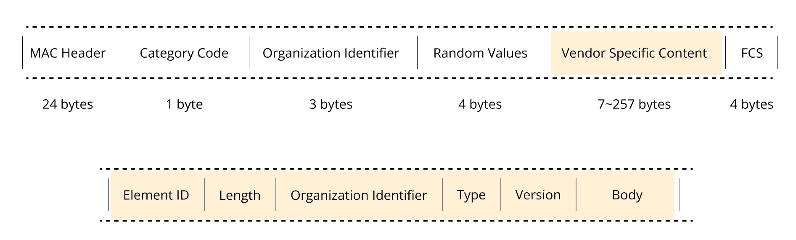

การสื่อสารไร้สายด้วยโพรโทคอล ESPNOW สำหรับชิป Espressif ESP32 SoC#
▷ ESPNOW#
ESP-NOW เป็นโพรโทคอลการสื่อสารแบบไร้สาย (Wireless Communication Protocol) ที่พัฒนาโดยบริษัท Espressif ซึ่งออกแบบมาสำหรับการเชื่อมต่อระหว่างอุปกรณ์ ESP8266 / ESP32 โดยไม่ต้องใช้ Wi-Fi Router เป็นตัวกลาง (Infrastructure-less Communication) ซึ่งช่วยลด Latency ในการส่งข้อมูล และช่วยประหยัดพลังงานได้ดีขึ้น เหมาะกับงาน IoT แบบ Peer-to-Peer และ Wireless Mesh Communication ใช้งานง่ายและเหมาะกับงาน Real-time Event
สำหรับการเขียนโปรแกรม C/C++ โดยใช้ ESP-IDF Framework
ก็มีไลบรารีซึ่งมีชื่อว่า espressif/esp-now
ซึ่งเป็นหนึ่งใน ESP-IDF Component ที่ให้ Low-level API สำหรับการใช้งาน ESP-NOW
หรือ ไลบรารี <esp_now.h> สำหรับการเขียนโปรแกรมด้วย Arduino ESP32 Core
หากต้องการศึกษาคำสั่งและฟังก์ชันต่าง ๆ ของ ESP-NOW สามารถดูได้จากเอกสารออนไลน์ ESP-IDF Programming Guide: ESP-NOW
ฟังก์ชันหลักของ ESP-NOW API ที่ใช้งานบ่อย มีดังนี้
esp_now_init(...):- ใช้สำหรับเริ่มต้นใช้งาน ESP-NOW ฟังก์ชันนี้ต้องเรียกก่อนใช้ ESP-NOW ทุกครั้ง เป็นการเตรียมระบบ Wi-Fi ให้พร้อมรับส่งข้อมูลด้วยโพรโทคอล ESP-NOW
esp_now_add_peer( const esp_now_peer_info_t *peer ):- เพิ่มข้อมูลอุปกรณ์ปลายทาง (Peer Device) ที่ต้องการสื่อสารด้วย
ซึ่งจะต้องระบุข้อมูล เช่น กำหนด MAC Address ของตัวรับ การเข้ารหัสข้อมูล ช่องสัญญาณ Wi-Fi และโหมด Long-Range
โดยใช้โครงสร้างข้อมูล
esp_now_peer_info_t
- เพิ่มข้อมูลอุปกรณ์ปลายทาง (Peer Device) ที่ต้องการสื่อสารด้วย
ซึ่งจะต้องระบุข้อมูล เช่น กำหนด MAC Address ของตัวรับ การเข้ารหัสข้อมูล ช่องสัญญาณ Wi-Fi และโหมด Long-Range
โดยใช้โครงสร้างข้อมูล
esp_now_send( const uint8_t *peer_addr, const uint8_t *data, size_t len ):- ส่งข้อมูลไปยังอุปกรณ์ที่กำหนดแบบ Unicast หรือ Broadcast (ขึ้นอยู่กับ
peer_addrถ้าpeer_addrเป็นFF:FF:FF:FF:FF:FFก็เป็นการส่งแบบ Broadcast)
- ส่งข้อมูลไปยังอุปกรณ์ที่กำหนดแบบ Unicast หรือ Broadcast (ขึ้นอยู่กับ
esp_now_register_send_cb( esp_now_send_cb_t cb ):- ตั้งค่าเพื่อใช้ฟังก์ชัน Callback ที่จะถูกเรียกเมื่อส่งข้อมูลเสร็จ ซึ่งจะต้องเป็นไปตามรูปแบบของฟังก์ชันที่กำหนดไว้โดย
esp_now_send_cb_tและตรวจสอบว่าการส่งสำเร็จหรือไม่ (Success / Fail)
- ตั้งค่าเพื่อใช้ฟังก์ชัน Callback ที่จะถูกเรียกเมื่อส่งข้อมูลเสร็จ ซึ่งจะต้องเป็นไปตามรูปแบบของฟังก์ชันที่กำหนดไว้โดย
esp_now_register_recv_cb( esp_now_recv_cb_t cb ):- ตั้งค่าเพื่อใช้ฟังก์ชัน Callback ที่จะถูกเรียกเมื่อมีข้อมูลเข้ามา ซึ่งจะต้องเป็นไปตามรูปแบบของฟังก์ชันที่กำหนดไว้โดย
esp_now_recv_cb_t
- ตั้งค่าเพื่อใช้ฟังก์ชัน Callback ที่จะถูกเรียกเมื่อมีข้อมูลเข้ามา ซึ่งจะต้องเป็นไปตามรูปแบบของฟังก์ชันที่กำหนดไว้โดย
esp_now_set_pmk( const uint8_t *pmk ):- ตั้งค่า Primary Master Key (PMK) ซึ่งเป็นข้อมูลขนาด 16 ไบต์ เพื่อใช้ในการเข้ารหัสข้อมูลด้วย AES (Advanced Encryption Standard)
esp_now_get_version( uint32_t *version ):- ตรวจสอบเวอร์ชันของ ESP-NOW (เช่น
1= v1.0 หรือ2= v2.0)
- ตรวจสอบเวอร์ชันของ ESP-NOW (เช่น
ดูซอร์สโค้ดที่เกี่ยวข้องได้จากไฟล์ (มีแต่ C Header): esp_now.h
และ ESP-IDF Programming Guide: ESP-NOW
▷ หลักการทำงานของโพรโทคอล ESP-NOW#
ESP-NOW
- เป็นโพรโทคอลการสื่อสารไร้สายแบบไม่ต้องเชื่อมต่อ โดยออกแบบมาสำหรับการใช้งานกับอุปกรณ์ ESP8266 และ ESP32 ของบริษัท Espressif
- หากเปรียบเทียบกับการเชื่อมต่อ Wi-Fi แบบปกติที่ต้องผ่าน Access Point ESP-NOWจะช่วยให้อุปกรณ์สามารถสื่อสารกันได้โดยตรงแบบ Peer-to-Peer โดยไม่จำเป็นต้องสร้างเครือข่าย (Infrastructure-less) ช่วยประหยัดพลังงานของอุปกรณ์ได้อย่างมีประสิทธิภาพ
- ลักษณะการทำงานของ ESP-NOW:
- มีเวอร์ชัน ได้แก่ ESP-NOW v1.x และ ESP-NOW v2.x
- สื่อสารโดยตรงแบบ "อุปกรณ์ต่ออุปกรณ์" (Peer-to-Peer)
- ใช้ย่านความถี่ 2.4 GHz ISM Band
- ใช้งานร่วมกับ Wi-Fi และ Bluetooth LE ได้พร้อมกัน (เฉพาะกรณี ESP32)
- ใช้การส่งข้อมูลโดยมีรูปแบบของเฟรมตามมาตรฐาน IEEE 802.11 Wi-Fi ที่เรียกว่า Vendor-Specific Action Frames
- ทำงานในระดับ Physical Layer & Data Link Layer ของโมเดล 7-Layer OSI
- ส่งข้อมูลได้สูงสุด 250 ไบต์ (v1) และ 1470 ไบต์ (v2) ต่อข้อความ
- รองรับการสื่อสารแบบ: Unicast (เจาะจงผู้รับ กำหนดโดย MAC Address) และ Broadcast (ส่งกระจายและไม่เจาะจงผู้รับ และ MAC Address ของตัวรับ ตั้งค่าเป็น
FF:FF:FF:FF:FF:FF) - ใช้กลไก CSMA (Carrier Sense Multiple Access / Collision Avoidance) ของ IEEE 802.11 เพื่อหลีกเลี่ยงการชนกันของแพ็กเกต
- ในการส่งแบบ Unicast จะมีการตรวจสอบการได้รับข้อความจากผู้รับ (ACK) แต่ถ้าไม่ได้รับ ตัวส่งก็จะมีการส่งซ้ำ (Retransmit) แต่สูงสุด 10 ครั้ง (โดยค่าเริ่มต้น) แต่การส่งแบบ Broadcast จะไม่มีการตอบรับ ACK กลับมา
- สามารถเข้ารหัสข้อมูลด้วยโพรโทคอล AES (128-bit key) แต่ใช้ได้เฉพาะ Unicast เท่านั้น
- การเข้ารหัสด้วย AES จะทำงานในโหมด CTR + CBCS-CBC-MAC Protocol (CCMP) ตามมาตรฐาน IEEE Std. 802.11-2012 และการเข้ารหัสจะต้องใช้คีย์ในการเข้ารหัส PMK (Primary Master Key) และ LMK (Local Master Key)
- มีโหมดให้เลือกใช้งาน 2 โหมด: Regular กับ Long-Range (LR) ซึ่งตัวเลือกนี้แบบหลังนี้ จะทำให้รับส่งข้อมูลได้ไกลขึ้น แต่อัตราการสื่อสารข้อมูลจะลดลง
- ความเร็วในการส่งข้อมูล (Data Rate):
- Regular: 1Mbps
- LR: 500Kbps | 250Kbps
- จำนวนอุปกรณ์ที่เชื่อต่อด้วยได้ (Peer Devices)
- รองรับอุปกรณ์แบบไม่เข้ารหัส ได้สูงสุด 20 ตัว (
ESP_NOW_MAX_TOTAL_PEER_NUM) - รองรับอุปกรณ์ที่ใช้การเข้ารหัส ได้สูงสุด 6 ตัว (
ESP_NOW_MAX_ENCRYPT_PEER_NUM)
- รองรับอุปกรณ์แบบไม่เข้ารหัส ได้สูงสุด 20 ตัว (
- สามารถเลือกใช้อินเทอร์เฟสได้ทั้ง:
WIFI_IF_STA(Station) และWIFI_IF_AP(SoftAP)
- ข้อกำหนดสำคัญสำหรับการสื่อสารด้วย ESP-NOW:
- อุปกรณ์ทุกตัวต้องอยู่บน ช่องสัญญาณ Wi-Fi เดียวกัน
- ต้องใช้ โหมดการสื่อสารแบบเดียวกัน เช่น Regular หรือ Long-Range (LR)
- ถ้าเข้ารหัสด้วย AES ทั้งสองอุปกรณ์จะต้องใช้รหัสป้องกันเหมือนกัน และใช้กับ Unicast Mode
▷ โครงสร้างข้อมูลสำหรับ ESPNOW#
ข้อความของ ESP-NOW จะถูกห่อหุ้มอยู่ภายใน IEEE 802.11 Vendor-Specific Action Frames ซึ่งเป็นหนึ่งในประเภทของเฟรมการจัดการ (Management Frame) ที่ใช้ในโปรโตคอล Wi-Fi

รูป: โครงสร้างของเฟรม ESP-NOW Vendor-Specific Action Frame
โครงสร้างของเฟรม ESP-NOW โดยทั่วไปประกอบด้วย:
- 802.11 MAC Header (24 bytes)
- มีข้อมูลเช่น MAC Address ของต้นทางและปลายทาง และฟิลด์ควบคุมเฟรม (Frame Control)
- ระบุว่าเฟรมนี้เป็นประเภท Management Frame และเป็นแบบ Vendor-Specific Action Frame
- Category Code (1 byte)
- ตั้งค่าเป็น
0x7Fเพื่อบ่งบอกว่าเป็นเฟรมแบบ Vendor-Specific Action
- ตั้งค่าเป็น
- OUI (3 bytes)
- OUI = Organizationally Unique Identifier
- เป็นรหัส 3 ไบต์ เฉพาะของบริษัท Espressif (คือ
18:FE:34ในรูปแบบเลขฐานสิบหก) - ใช้เพื่อให้แน่ใจว่าเฟรมนี้เป็นของบริษัท Espressif
- Random Value (4 bytes)
- เป็นเลขสุ่มที่ใช้ในการส่งข้อมูลแต่ละครั้ง
- ส่วนเนื้อหาเฉพาะของผู้ผลิต (Vendor-specific Content หรือ ESP-NOW Payload)
- ประกอบด้วยข้อมูลควบคุมและข้อมูลของแอปพลิเคชันที่ต้องการส่ง และมีฟิลด์ควบคุมต่าง ๆ
- v1.0: มีความยาวสูงสุด 257 (= 250 + 7) ไบต์
- v2.0: มีความยาวสูงสุด 1532 (= 1490 + 6*7) ไบต์
▷ ตัวอย่างโค้ดสำหรับการส่งและรับข้อมูลด้วย ESP-NOW#
ถัดไปเป็นตัวอย่างโค้ดสำหรับ Arduino-ESP32 สาธิตการส่งข้อมูลด้วย ESP-NOW จากอุปกรณ์ ESP32 ตัวหนึ่ง (ทำหน้าที่เป็น ESP32 Sender / Initiator) ไปยัง ESP32 อีกตัวหนึ่ง (ทำหน้าที่เป็น ESP32 Receiver / Responder) แต่ถ้าระบุ MAC Address ของตัวรับสำหรับการสื่อสารแบบ Broadcast
โค้ดนี้ใช้สำหรับสองกรณีคือ ตัวส่ง และ ตัวรับ แต่ถ้าจะกำหนดให้เป็นตัวส่ง จะต้องประกาศ #define ESP_NOW_SENDER
และรูปแบบของข้อมูลที่จะส่งด้วย ESP-NOW ก็สามารถกำหนดได้เอง เช่น
typedef struct {
char message[ MESSAGE_LEN ];
uint8_t count;
} data_t;
โค้ดตัวอย่าง: esp32_broadcast_demo.ino
#include <Arduino.h>
#include <WiFi.h>
#include <esp_now.h>
#include <esp_wifi.h>
// Uncomment the following for the ESP-NOW sender
//#define ESP_NOW_SENDER
// Note the TX power unit is 0.25dBm.
#define TX_POWER 80 // 20dBm
// Define a data structure as ESP-NOW payload
#define MESSAGE_LEN (300)
typedef struct {
char message[ MESSAGE_LEN ];
uint8_t count;
} data_t;
#ifdef ESP_NOW_SENDER
// Specify the MAC address of the peer device.
const uint8_t peerAddress[] = {0xFF, 0xFF, 0xFF, 0xFF, 0xFF, 0xFF};
esp_now_peer_info_t peerInfo;
void OnDataSent(
const uint8_t *mac_addr, esp_now_send_status_t status )
{
char macStr[18];
snprintf( macStr, sizeof(macStr), "%02x:%02x:%02x:%02x:%02x:%02x",
mac_addr[0], mac_addr[1], mac_addr[2],
mac_addr[3], mac_addr[4], mac_addr[5] );
Serial.printf( "Packet sent to peer: MAC=%s\n", macStr);
Serial.printf( "ESP-NOW send status: %s\n\n",
(status == ESP_NOW_SEND_SUCCESS) ? "success" : "fail" );
}
#else
// Callback function when data is received
void OnDataRecv(
const esp_now_recv_info_t *esp_now_info, const uint8_t *data, int len )
{
char sbuf[ MESSAGE_LEN ];
uint8_t count = ((data_t *)data)->count;
strncpy( sbuf, ((data_t *)data)->message, MESSAGE_LEN );
sbuf[MESSAGE_LEN - 1] = '\0'; // Ensure null termination
Serial.printf( "Message received: '%s #%u' (%d bytes), rssi=%d dBm\n\n",
sbuf, count, len, esp_now_info->rx_ctrl->rssi );
}
#endif
void setup() {
Serial.begin( 115200 ); // Initialize Serial Monitor
WiFi.mode( WIFI_STA ); // Set device as a Wi-Fi Station
esp_wifi_set_max_tx_power( TX_POWER ); // Set TX power
uint32_t version;
esp_now_get_version( &version );
Serial.printf( "ESP-NOW version: %lu\n", version );
if ( esp_now_init() != ESP_OK ) { // Initialize ESP-NOW
Serial.println( "Error initializing ESP-NOW!" );
delay(2000);
ESP.restart();
}
Serial.println( "ESP-NOW initialization successful..." );
#ifdef ESP_NOW_SENDER
// Configure the peer info
memcpy( peerInfo.peer_addr, peerAddress, 6 ); // Set the peer's MAC address
peerInfo.channel = 0; // Use the current WiFi channel (default)
peerInfo.encrypt = false; // No data encryption
peerInfo.ifidx = WIFI_IF_STA; // Use the WiFi STA interface
// Add a peer device by its MAC address
if ( esp_now_add_peer( &peerInfo ) != ESP_OK ){
Serial.println( "Failed to add peer!" );
return;
}
Serial.println( "Added peer successfully..." );
// Register the callback function for ESP-NOW data transmission
esp_now_register_send_cb( OnDataSent );
delay( 2000 );
#else
// Register a callback function for ESP-NOW data reception
esp_now_register_recv_cb( OnDataRecv );
#endif
}
void loop() {
#ifdef ESP_NOW_SENDER
// Static counter variable that retains its value
static uint8_t count = 0;
// Create and zero-initialize a data_t struct instance
data_t data = {};
// Copy a string to data.message (up to MESSAGE_LEN characters)
strncpy( data.message, "Hello ESP-NOW", MESSAGE_LEN );
// Assign current count value and increment its value
data.count = count++;
// Send the data over ESP-NOW to the peer address
esp_err_t result = esp_now_send( peerAddress,
(const uint8_t *)&data, sizeof(data_t) );
// Check if sending failed and print an error message
if (result != ESP_OK) {
Serial.printf( "esp_now_send() failed: %s", esp_err_to_name(result) );
}
delay(1000);
#endif
}
▷ Arduino Library ESP_NOW#
สำหรับผู้ที่เขียนโค้ดด้วย Arduino-ESP32 Core ก่อนหน้านี้ ก็มีไลบรารีโดยนักพัฒนาอิสระ เช่น
WifiEspNow ไว้สำหรับใช้งาน
ซึ่งเป็น C++ Class ที่ครอบฟังก์ชันการทำงานของ ESP-NOW API จาก ESP-IDF
ต่อมาบริษัท Espressif ได้พัฒนาไลบรารีชื่อ ESP_NOW
เพื่อให้นักพัฒนาสามารถใช้งานโปรโตคอลนี้ได้ง่ายขึ้น แต่แนะนำให้ใช้กับ Arduino-ESP32 Core
(ในเอกสารนี้ได้ทดลองใช้เวอร์ชัน v3.2.0) โดยใช้คลาสหลักๆ คือ ESP_NOW_Class และ ESP_NOW_Peer
ไลบรารีนี้เป็นส่วนหนึ่งของโปรเจกต์ espressif/arduino-esp32 และสามารถดูได้ที่ libraries/ESP_NOW:
ESP32_NOW.h +
ESP32_NOW.cpp
ESP_NOW_Class ใช้สำหรับจัดการกับฟังก์ชันหลักของ ESP-NOW เช่น
การเริ่มต้นระบบ การส่ง/รับข้อมูล และการจัดการ Peer (อุปกรณ์ที่เชื่อมต่อ)
ฟังก์ชันสมาชิกที่สำคัญ เช่น
begin(): เริ่มต้นระบบ ESP-NOW ต้องเรียกฟังก์ชันนี้ก่อนใช้งานend(): จบการทำงานของ ESP-NOWgetTotalPeerCount(): อ่านค่าจำนวน Peer ทั้งหมดที่เชื่อมต่อกับอุปกรณ์นี้getEncryptedPeerCount(): อ่านค่าจำนวน Peer ที่มีการเข้ารหัส AES-128write( const uint8_t *data, size_t len ): ส่งข้อมูลไปยัง Peer ล่าสุดที่ถูกเพิ่มremovePeer( ESP_NOW_Peer &peer ): ลบ Peer ออกจากระบบonNewPeer( void (*cb)(...), ...): กำหนดฟังก์ชัน Callback เมื่อมี Peer ใหม่เข้ามา
ESP_NOW เป็น "อ็อบเจกต์" (Object) ที่ถูกสร้างขึ้นจากคลาส ESP_NOW_Class
ที่ถูกประกาศไว้ในไลบรารีแล้ว จึงสามารถนำมาใช้งานได้โดยตรง สำหรับจัดการการสื่อสารผ่านโปรโตคอล ESP-NOW
extern ESP_NOW_Class ESP_NOW;
ในการทำงานเบื้องหลัง ESP_NOW จะเรียกใช้ API ระดับล่างจาก ESP-IDF เช่น:
esp_err_t esp_now_init( ... )esp_err_t esp_now_register_recv_cb( ... )esp_err_t esp_now_register_send_cb( ... )esp_err_t esp_now_send( ... )esp_err_t esp_now_set_pmk( ... )
ESP_NOW_Peer เป็นคลาสใช้แทนตัวอุปกรณ์ที่เราต้องการรับส่งข้อมูลด้วย (เรียกว่า Peer)
โดยคลาสนี้จะเก็บข้อมูลที่จำเป็น เช่น MAC Address, คีย์ขนาด 16 ไบต์สำหรับการเข้ารหัสข้อมูล
และโหมด Wi-Fi ที่จะเลือกใช้ เช่น WIFI_AP หรือ WIFI_STA
ตัวแปรสมาชิกที่สำคัญ
uint8_t mac[6]: MAC Address ของอุปกรณ์ปลายทาง (6 ไบต์)uint8_t chan: ช่องสัญญาณ WiFi ที่ใช้bool encrypt: ระบุว่าจะเข้ารหัสข้อมูลหรือไม่ (true/false)uint8_t key[16]: Local Master Key (LMK) สำหรับการเข้ารหัส (ถ้ากำหนดให้ใช้)wifi_interface_t ifc: ระบุอินเทอร์เฟสของ Wi-Fi เช่นWIFI_APหรือWIFI_STAbool added: ระบุว่าอุปกรณ์นี้ถูกเพิ่มไว้ในรายการ Peer แล้วหรือยัง
แต่มีข้อสังเกตว่า คลาส ESP_NOW_Peer ไม่ได้ออกแบบให้สร้างอ็อบเจกต์ด้วยตัวมันเองโดยตรง
และจะต้องไปสร้างคลาสใหม่ที่สืบทอดคุณสมบัติของคลาสนี้ก่อน จึงจะสร้างเป็นอ็อปเจกต์ได้
และส่วนใหญ่ของการใช้งาน ESP_NOW_Peer จะเกี่ยวข้องกับการส่งผ่านอาร์กิวเมนต์ให้กับเมทอดของ
ESP_NOW_Class เช่น addPeer(), removePeer() หรือ getPeer()
การทำงานของ ESP_NOW_Peer จะมีการเรียกใช้ฟังก์ชันของ ESP-IDF API ในระดับล่าง
bool esp_now_is_peer_exist( ... )esp_err_t esp_now_add_peer( ... )esp_err_t esp_now_del_peer( ... )esp_err_t esp_now_mod_peer( ... )
ไลบรารี ESP_NOW มีตัวอย่างการใช้งานที่เหมาะสำหรับการทดลองเบื้องต้น คือ
ESP_NOW_Serial
โดยมีการสร้างคลาสชื่อ ESP_NOW_Serial_Class ซึ่งสืบทอดคุณสมบัติมาจากคลาส
Stream และ ESP_NOW_Peer และจะทำให้ผู้ใช้สามารถใช้งาน ESP-NOW
เพื่อรับส่งข้อมูลระหว่างอุปกรณ์แบบ Peer-to-Peer
ในลักษณะเดียวกับการใช้งาน Serial แต่เป็นการเชื่อมต่อแบบไร้สาย
เช่น รองรับฟังก์ชัน read(), write() และ available() เป็นต้น
ตัวอย่างต่อไปนี้ สาธิตการใช้คลาส ESP_NOW_Serial_Class เพื่อใช้ ESP-NOW
ในการสื่อสารข้อมูลแบบ Serial Stream ระหว่างบอร์ด ESP32 จำนวน 2 บอร์ด
(อ้างอิงโดยใช้ NODE_ID มีค่าเป็น 0 หรือ 1)
และจะต้องกำหนดค่า MAC Address ของแต่ละบอร์ดให้ถูกต้องด้วย
เนื่องจากเป็นการสื่อสารในโหมด Unicast
ข้อความที่ได้รับจากพอร์ต Serial ของบอร์ดหนึ่ง จะถูกส่งผ่าน ESP-NOW ไปยังอีกฝ่ายหนึ่ง แล้วส่งออกมาพอร์ต Serial และในทิศทางตรงข้าม ก็มีลักษณะการทำงานเช่นเดียวกัน
File: espnow_serial_bridge.ino
#include <Arduino.h>
#include <WiFi.h>
#include <esp_wifi.h>
#include <ESP32_NOW_Serial.h>
#include <MacAddress.h>
#define NODE_ID (0) // Set node ID either 0 or 1
#define ESPNOW_WIFI_CHANNEL (1) // Set channel number: 1..13
#define USE_WIFI_MODE_STATION // use WiFi STA mode
#ifdef USE_WIFI_MODE_STATION // Use the WiFi Station mode
#define ESPNOW_WIFI_MODE WIFI_STA // WiFi Mode: station mode
#define ESPNOW_WIFI_IF WIFI_IF_STA // WiFi Interface: station interface
#else // Use the WiFi AP mode
#define ESPNOW_WIFI_MODE WIFI_AP // WiFi Mode: AP mode
#define ESPNOW_WIFI_IF WIFI_IF_AP // WiFi Interface: AP interface
#endif
// You have to specify the correct MAC addresses of the ESP32 devices
#ifdef USE_WIFI_MODE_STATION // Use MAC addresses in STA mode
#if NODE_ID == 0
const uint8_t mac_addr[] = {0x54, 0x43, 0xB2, 0xA9, 0x36, 0x10};
#else
const uint8_t mac_addr[] = {0xC0, 0x49, 0xEF, 0x45, 0xF3, 0xC4};
#endif
#else // Use MAC addresses in AP mode
#if NODE_ID == 0
const uint8_t mac_addr[] = {0x54, 0x43, 0xB2, 0xA9, 0x36, 0x11};
#else
const uint8_t mac_addr[] = {0xC0, 0x49, 0xEF, 0x45, 0xF3, 0xC5};
#endif
#endif
// Note the TX power unit is 0.25dBm.
#define TX_POWER (80) // 20dBm
MacAddress peerAddress = MacAddress(mac_addr);
ESP_NOW_Serial_Class EspNowSerial( peerAddress,
ESPNOW_WIFI_CHANNEL, ESPNOW_WIFI_IF );
void setup() {
Serial.begin(115200);
Serial.println("Starting ESP32 ESPNOW-Serial...");
delay(1000);
Serial.flush();
Serial.printf( "Node ID: %d\n", NODE_ID );
WiFi.mode( ESPNOW_WIFI_MODE );
Serial.printf( "WiFi mode: %s\n",
(ESPNOW_WIFI_MODE==WIFI_STA) ? "WIFI_STA" : "WIFI_AP" );
esp_wifi_set_max_tx_power( TX_POWER ); // Set TX power
WiFi.setChannel( ESPNOW_WIFI_CHANNEL, WIFI_SECOND_CHAN_NONE );
Serial.printf( "WiFi channel: %d\n", WiFi.channel() );
while (!(WiFi.STA.started() || WiFi.AP.started())) { delay(1); }
if (ESPNOW_WIFI_MODE == WIFI_STA) {
Serial.printf( "STA MAC: %s\n",
String(WiFi.macAddress()).c_str() );
} else {
Serial.printf( "AP MAC: %s\n",
String(WiFi.softAPmacAddress()).c_str() );
}
EspNowSerial.begin(115200); // Initialize the EspNowSerial object
EspNowSerial.setTxBufferSize(256); // Set the Tx and Rx buffer size
EspNowSerial.setRxBufferSize(256);
}
void loop() { // USB-Serial <--> ESPNOW-Serial bridge
// Check if there's data available from the ESPNOW serial stream
while (EspNowSerial.available()) {
// Read one byte from ESPNOW-serial and write it to the USB serial
if (Serial.write(EspNowSerial.read()) <= 0) {
break; // Stop the while loop if writing to USB serial failed
}
}
// Check if there's data from USB serial
// and space available to write to ESPNOW serial
while (Serial.available() && EspNowSerial.availableForWrite()) {
// Read one byte from USB serial and write it to ESPNOW serial
if (EspNowSerial.write(Serial.read()) <= 0) {
break; // Stop the while loop if writing to ESPNOW serial failed
}
}
}
▷ กล่าวสรุป#
บทความนี้ได้นำเสนอภาพรวมของโพรโทคอล ESP-NOW และการใช้งานในเบื้องต้น ซึ่งเหมาะสำหรับการสื่อสารข้อมูลแบบไร้สายบนย่านความถี่ 2.4GHz โดยออกแบบมาให้ใช้งานร่วมกับชิป ESP8266 / ESP32 ของบริษัท Espressif โดยเฉพาะ
This work is licensed under a Creative Commons Attribution-ShareAlike 4.0 International License.
Created: 2025-04-20 | Last Updated: 2025-04-22